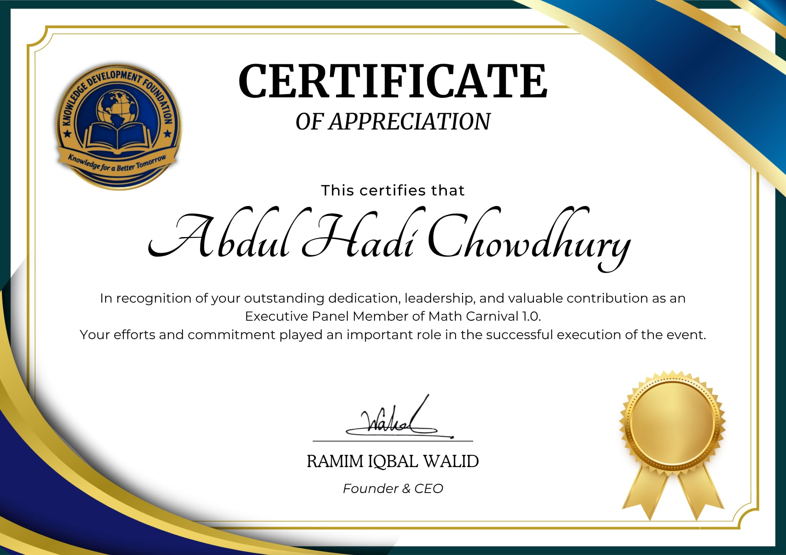
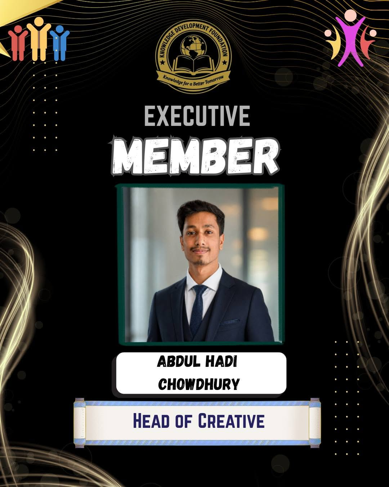
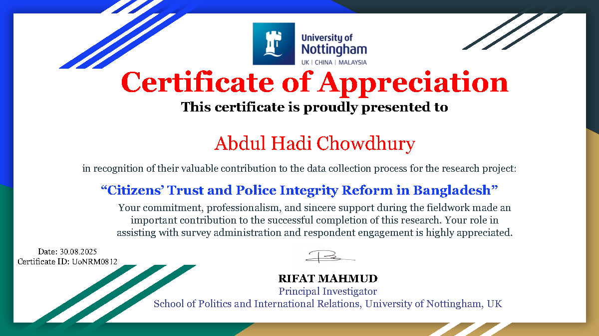

Senior Research Associate at NextStep Writers — bridging academic rigor with actionable insight through data-driven research, policy analysis, field coordination, and governance studies.
Academic and research development shaped by public administration knowledge, field engagement, research support, and evidence-informed documentation practice.
I am a Public Administration and Governance Studies student at Jatiya Kabi Kazi Nazrul Islam University, with a growing profile in social science research, academic documentation, and field-based project support.
My work connects research planning, data collection, policy-oriented analysis, and structured academic writing. I have contributed to projects involving institutional data, respondent coordination, and evidence-focused documentation across governance, education, human rights, and public sector themes.
I bring value through careful organization, clear communication, and an ability to translate complex research tasks into structured outputs—whether through literature reviews, thesis formatting, presentation design, field coordination, or report development.
0+Respondents surveyed
0+Research projects
3.40CGPA in BSS
0+Years of experience
Skills
Tools & competencies
A practical set of skills in research support, data handling, coordination, academic writing, and organized project documentation.
Professional experience in research assistance, creative leadership, training coordination, field-level data collection, academic support, and administrative documentation.
01
May 2025 — Present
Senior Research Associate
NextStep Writers · Remote
Research proposal support, thesis formatting, research paper editing, and literature review assistance. Data analysis support using Excel, SPSS, and Stata; report writing and presentation slide preparation.
02
2026 — Present
Executive Member & Head of Creative
Knowledge Development Foundation
Contributes to creative planning, visual communication, content development, and organisational branding while supporting knowledge-based initiatives and youth-focused programmes.
03
Mar 2025 — May 2025
Training Coordinator
Ethical Leadership & Integrity Training · Mymensingh District Police
Coordinated training activities under a project funded by the University of Nottingham and supported implementation with the Centre on Budget and Policy, University of Dhaka.
04
May 2025 — Jun 2025
Research Enumerator
Ethical Leadership & Integrity Management in the Public Sector
Conducted field-level data collection from more than 900 police personnel in Mymensingh District and supported respondent coordination.
05
2023 & 2024
Volunteer
JKKNIU Research Fair
Supported event coordination, participant management, and on-site communication during the JKKNIU Research Fair.
Research
Selected projects
Selected academic and fieldwork projects presented with role, method, focus area, and key contribution for clear understanding.
PRJ — 001
Impact of Income-Generating Activities on Women’s Economic Empowerment
Evidence from Social Safety Net Programs in Bangladesh, with emphasis on women’s livelihood participation and empowerment outcomes.
OutputAcademic research report with structured findings
Research CollaborationNov 2024
PRJ — 003
Role of NGOs (BRAC) in Human Rights Advocacy in Bangladesh
A field-based inquiry into NGO-supported human rights advocacy, institutional engagement, and grassroots respondent perspectives.
RolePrimary data collection
Methods/ToolsRespondent engagement, field notes, interview support
OutputField evidence for academic analysis
Data CollectionSep 2024
PRJ — 004
Problems & Prospects of New Curriculum in Secondary Education
Explored secondary-level educational experiences across Trishal, Dhanikhola, and Balipara through field-level data collection.
RoleField coordination & data collection
Methods/ToolsSchool-level respondent management, field survey
OutputCollected dataset and field documentation
Data CollectionDec 2023
PRJ — 005
Institutional Data Collection — Mymensingh City Corporation
Conducted institutional data collection activities with the City Corporation Office in Mymensingh for public administration-related inquiry.
RoleInstitutional liaison support
Methods/ToolsOffice-based data collection, document review
OutputInstitutional information and administrative notes
Institutional DataFeb 2025
PRJ — 006
Ethical Leadership & Integrity in the Public Sector
Supported research implementation, field-level data collection, and respondent coordination for a public sector integrity project.
RoleResearch Enumerator
Methods/ToolsEnumeration, respondent coordination, field reporting
OutputProject field support and verified experience
EnumerationAug 2025
Education
Academic foundation
Academic qualifications that support a strong foundation in public administration, governance studies, social research, and analytical learning.
Jatiya Kabi Kazi Nazrul Islam University
BSS in Public Administration & Governance Studies
2022 — Present · Expected 2027
3.40CGPA
Dhaka City College
Higher Secondary Certificate · Business Studies
2020 — 2022 · Cumilla Board
4.57GPA
Ataturk Model High School
Secondary School Certificate · Business Studies
2015 — 2020 · Dhaka Board
4.17GPA
Credentials
Selected credentials
Certificates, appointments, and achievements reflecting continued learning, leadership, academic engagement, and professional skill development.
Training Certificate
Using Artificial Intelligence in Social Science Research
Neeti Gobeshona KendraApril 2026Online Training
Completed a focused training session on the application of artificial intelligence in social science research. The program strengthened practical understanding of AI-informed research workflows, digital tools, and emerging analytical approaches relevant to contemporary social inquiry.
Expanded knowledge of AI-assisted research practices.
Built familiarity with digital research support tools for social science work.
Field Experience
Research Enumerator — Ethical Leadership and Integrity Management in the Public Sector
University of DhakaUniversity of Nottingham & UCLMay–June 2025
Worked as a Research Enumerator for the project titled Ethical Leadership and Integrity Management in the Public Sector. This role involved field-level coordination, respondent engagement, and data collection support within a collaborative research initiative involving the University of Dhaka, the University of Nottingham, and University College London.
Contributed to project implementation through structured fieldwork support.
Strengthened skills in research coordination, communication, and data collection practice.

Certificate of Appreciation
Best Executive Panel Member — Math Carnival 1.0
Knowledge Development FoundationMath Carnival 1.0Leadership Recognition
Recognised for outstanding dedication, leadership, and valuable contribution as an Executive Panel Member of Math Carnival 1.0. The award reflects active participation in event planning, team coordination, and successful programme execution.
Contributed to the planning and execution of Math Carnival 1.0.
Demonstrated teamwork, responsibility, and leadership.

Leadership Appointment
Executive Member & Head of Creative
Knowledge Development Foundation2026 — PresentCreative Leadership
Serving as an Executive Member and Head of Creative with responsibility for creative planning, visual communication, content development, and organisational branding. The role supports knowledge-based initiatives and youth-focused programmes.
Leads creative planning and visual content direction.
Supports organisational branding and youth development initiatives.

Certificate of Appreciation
Research Data Collection Contribution
University of Nottingham30 August 2025Field Research
Awarded in recognition of valuable contribution to the data collection process for the research project “Citizens’ Trust and Police Integrity Reform in Bangladesh.” The fieldwork contribution included survey administration, respondent engagement, and professional support for successful project completion.
Supported survey administration and respondent engagement.
Contributed to field-level data collection for an international research project.
Contact
Let's work together
Open to research collaboration, academic documentation support, field coordination, presentation design, and project-based research assistance.